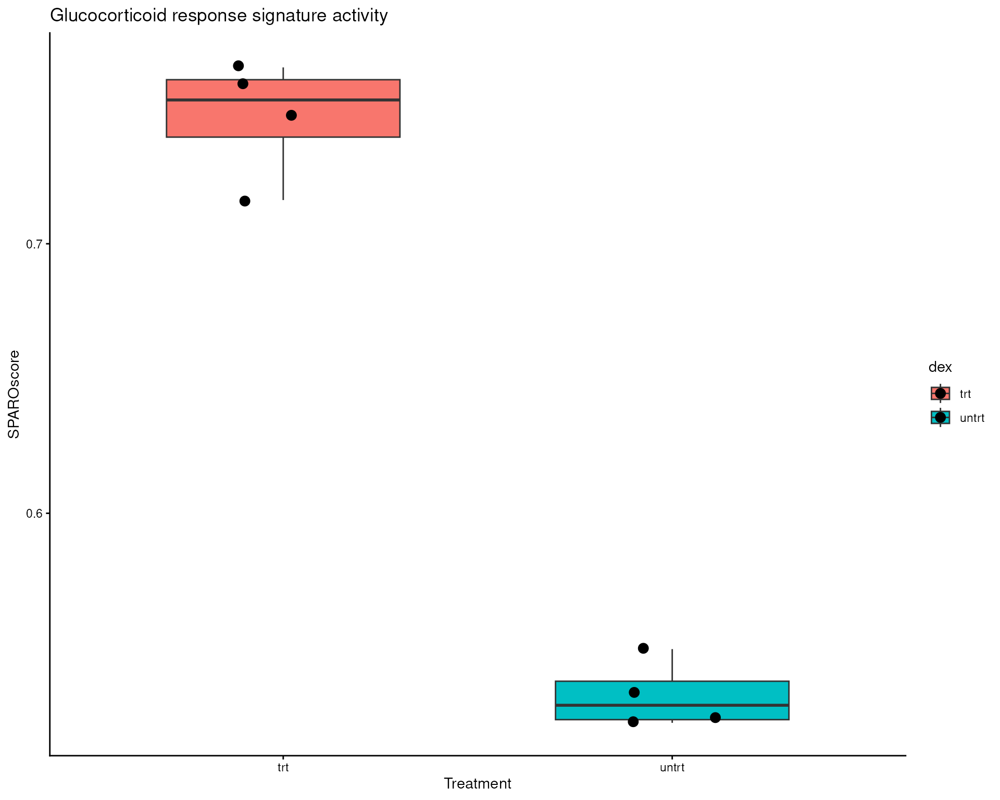

vignettes/sparoscore_getting_started.Rmd
sparoscore_getting_started.Rmd
# load the necessary libraries
library(SPAROscore)
library(airway)
library(ggplot2)SPAROscore is a gene signature scoring method designed to be robust across diverse gene expression datasets. SPAROscore adapts to varying levels of sparsity, allowing signature scores to be efficiently computed across bulk, single-cell, and spatial transcriptomic datasets.
The resulting scores quantify the relative expression of a gene signature compared with the background expression of each sample/cell/domain, making the scores straightforward to interpret biologically.
Internally, SPAROscore ranks genes within each column and computes the Spearman footrule distance between the observed ranks of the signature genes and a background gene expression rank estimated from the geometric mean expression of the sample, cell, or spatial domain.
To use SPAROscore, at minimum, a gene expression dataset and one or more gene signatures are required.
To demonstrate this, we will use the gene expression matrix from the
airway package, containing RNA-seq read counts from eight
human airway smooth muscle (ASM) cell line samples: four treated with
dexamethasone and four untreated controls.
As an example gene signature, we use the top differentially expressed genes reported in the original study.
The expression matrix contains genes in rows and samples in columns. The accompanying metadata indicates whether each sample received dexamethasone treatment (trt) or served as an untreated control (untrt).
# load the airway dataset
data(airway)
# extract the gene expression matrix
counts_data <- assay(airway)
# extract the metadata
metadata <- as.data.frame(colData(airway))
# view sample level dexamethasone treatment status
metadata[, c("Run", "dex")]
#> Run dex
#> SRR1039508 SRR1039508 untrt
#> SRR1039509 SRR1039509 trt
#> SRR1039512 SRR1039512 untrt
#> SRR1039513 SRR1039513 trt
#> SRR1039516 SRR1039516 untrt
#> SRR1039517 SRR1039517 trt
#> SRR1039520 SRR1039520 untrt
#> SRR1039521 SRR1039521 trt
# set the glucocorticoid response markers as the gene signature
signature_genes <- c("ENSG00000112936", "ENSG00000170606", "ENSG00000120129",
"ENSG00000152795", "ENSG00000211445", "ENSG00000163884",
"ENSG00000189221", "ENSG00000101347", "ENSG00000196136",
"ENSG00000152583", "ENSG00000120658", "ENSG00000157514",
"ENSG00000103196", "ENSG00000179094", "ENSG00000152763",
"ENSG00000103310", "ENSG00000127954")
# check if the gene ids in the signature match with that of the counts_data
head(signature_genes %in% rownames(counts_data))
#> [1] TRUE TRUE TRUE TRUE TRUE TRUE
scores <- sparoscore(data = counts_data, signatures = signature_genes)
#> SPAROscore says: Calculating column-wise geometric averages
#> SPAROscore says: Ranking a matrix object
# view the scores
scores
#> SPAROscore
#> SRR1039508 0.5238153
#> SRR1039509 0.7654385
#> SRR1039512 0.5495932
#> SRR1039513 0.7473585
#> SRR1039516 0.5337068
#> SRR1039517 0.7162212
#> SRR1039520 0.5222398
#> SRR1039521 0.7593574Since dexamethasone activates glucocorticoid signalling, treated samples are expected to exhibit higher glucocorticoid response scores than untreated controls.
# add the signature scores to the metadata
metadata$SPAROscore <- scores[, 1]
# plot results
ggplot(metadata, aes(x = dex, y = SPAROscore, fill = dex)) +
geom_boxplot(width = 0.6, outlier.shape = NA) +
geom_jitter(width = 0.12, size = 3) +
xlab("Treatment") +
ylab("SPAROscore")+
ggtitle("Glucocorticoid response signature activity")+
theme_classic()
SPAROscore is a rank-based gene signature scoring method designed to provide robust signature scores across a wide range of transcriptomics technologies, adapting automatically to the differences in platform-specific sequencing depth, expression sparsity, and technical variation.
As a result, the same scoring framework of SPAROscore can be applied consistently to bulk RNA sequencing, single-cell RNA sequencing, and spatial transcriptomics data without requiring platform-specific adjustments.
More information on how SPAROscore can be integrated into the analysis workflows of different transcriptomics technologies can be found here: Transcriptomics technologies
SPAROscore accepts a wide variety of commonly used data structures, including dense matrices, sparse matrices, DelayedArray, SummarizedExperiment, SingleCellExperiment, SpatialExperiment, and Seurat objects.
When dealing with transcriptomics-specific data structures like Seurat objects and SummarizedExperiment-derived objects, SPAROscore appends the scores to the existing metadata, to enhance further analyses.
SPAROscore can also handle multiple data structures for the gene signatures, including character vector, list of character vectors, GeneSet objects and GeneSetCollection objects, enabling single and multiple signature scoring.
More information on data structures and example codes can be found here: Data structures
By default, background gene expression is approximated using geometric mean expression values. This approximation can be overridden to accommodate biological contexts in which signature genes are expected to have lower expression. Users may provide custom background expression values to better reflect these conditions and tailor the scoring accordingly.
Because gene ranking is the most computationally intensive step, SPAROscore supports storing gene rankings for reuse in future scoring analyses. This avoids redundant computations and substantially improves performance.
For examples of additional options and more advanced usage, see: Advanced options
sessionInfo()
#> R version 4.6.1 (2026-06-24)
#> Platform: x86_64-pc-linux-gnu
#> Running under: Ubuntu 24.04.4 LTS
#>
#> Matrix products: default
#> BLAS: /usr/lib/x86_64-linux-gnu/openblas-pthread/libblas.so.3
#> LAPACK: /usr/lib/x86_64-linux-gnu/openblas-pthread/libopenblasp-r0.3.26.so; LAPACK version 3.12.0
#>
#> locale:
#> [1] LC_CTYPE=en_US.UTF-8 LC_NUMERIC=C
#> [3] LC_TIME=en_US.UTF-8 LC_COLLATE=en_US.UTF-8
#> [5] LC_MONETARY=en_US.UTF-8 LC_MESSAGES=en_US.UTF-8
#> [7] LC_PAPER=en_US.UTF-8 LC_NAME=C
#> [9] LC_ADDRESS=C LC_TELEPHONE=C
#> [11] LC_MEASUREMENT=en_US.UTF-8 LC_IDENTIFICATION=C
#>
#> time zone: UTC
#> tzcode source: system (glibc)
#>
#> attached base packages:
#> [1] stats4 stats graphics grDevices utils datasets methods
#> [8] base
#>
#> other attached packages:
#> [1] ggplot2_4.0.3 airway_1.33.0
#> [3] SummarizedExperiment_1.43.0 Biobase_2.73.1
#> [5] GenomicRanges_1.65.1 Seqinfo_1.3.0
#> [7] IRanges_2.47.2 S4Vectors_0.51.5
#> [9] BiocGenerics_0.59.10 generics_0.1.4
#> [11] MatrixGenerics_1.25.0 matrixStats_1.5.0
#> [13] SPAROscore_0.99.0
#>
#> loaded via a namespace (and not attached):
#> [1] sass_0.4.10 SparseArray_1.13.2 lattice_0.22-9
#> [4] magrittr_2.0.5 digest_0.6.39 evaluate_1.0.5
#> [7] grid_4.6.1 RColorBrewer_1.1-3 fastmap_1.2.0
#> [10] jsonlite_2.0.0 Matrix_1.7-5 scales_1.4.0
#> [13] textshaping_1.0.5 jquerylib_0.1.4 abind_1.4-8
#> [16] cli_3.6.6 rlang_1.3.0 XVector_0.53.0
#> [19] withr_3.0.3 cachem_1.1.0 DelayedArray_0.39.3
#> [22] yaml_2.3.12 otel_0.2.0 S4Arrays_1.13.0
#> [25] tools_4.6.1 dplyr_1.2.1 vctrs_0.7.3
#> [28] R6_2.6.1 lifecycle_1.0.5 fs_2.1.0
#> [31] htmlwidgets_1.6.4 ragg_1.5.2 pkgconfig_2.0.3
#> [34] desc_1.4.3 pillar_1.11.1 pkgdown_2.2.1
#> [37] bslib_0.11.0 gtable_0.3.6 glue_1.8.1
#> [40] systemfonts_1.3.2 tidyselect_1.2.1 tibble_3.3.1
#> [43] xfun_0.60 knitr_1.51 farver_2.1.2
#> [46] htmltools_0.5.9 labeling_0.4.3 rmarkdown_2.31
#> [49] compiler_4.6.1 S7_0.2.2